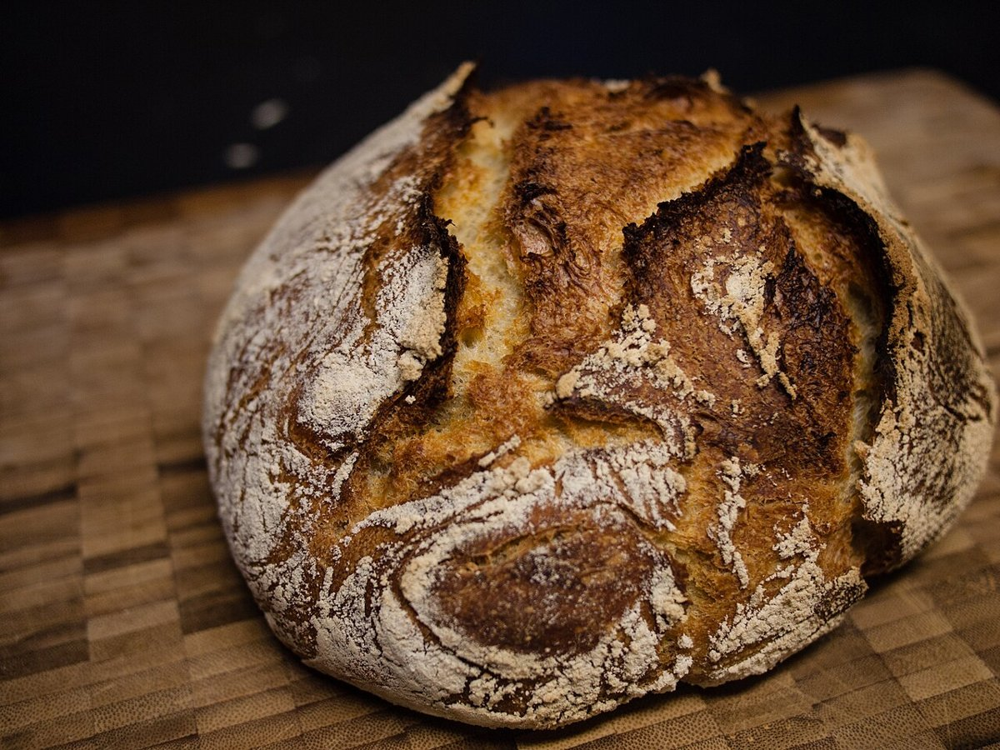
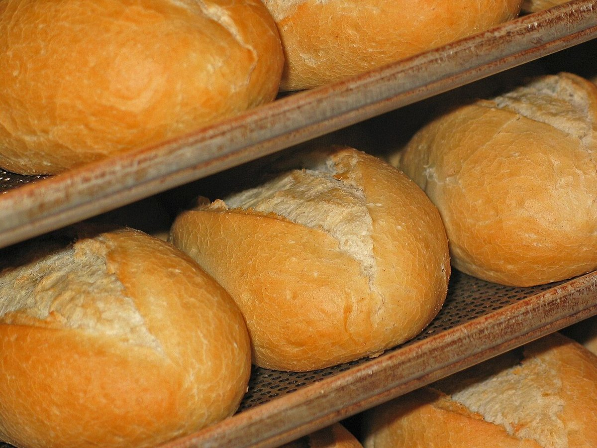
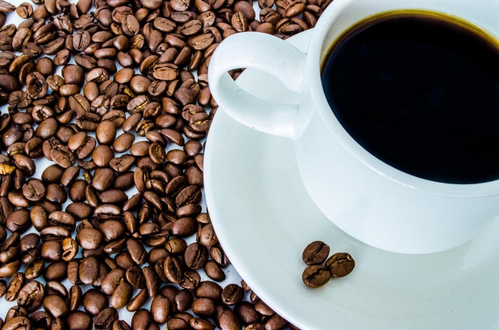

ABOUT
お店の由来と想い
ナガレヤマベーカリーは、千葉県流山市の南流山にあるパン屋さんです。紹介記事によると、2025年12月8日にオープンしました。
店内にはイートインスペースがあり、カウンター席とテーブル席で、買ったパンやドリンクをその場で楽しめるそうです。パンとコーヒーを軸にした、気軽に立ち寄れるお店です。
店名の意味やオーナーさまの想いは、公開されている情報では確認できませんでした。屋号の「ナガレヤマ」は、お店のある地名「流山」を思わせますが、由来をお店に伺ったものではありません。(制作側のイメージです)

BREAD & COFFEE
パンとコーヒー
紹介記事や口コミで名前の挙がっているのは、食パン、クロワッサン、塩バターパン、シナモンロール、デニッシュなど。ホットコーヒーなどのドリンクもあります。商品は入れ替わるため、最新はInstagramをご覧ください。
下の写真はフリー素材のイメージです。実際のお店の商品とは異なります。






VOICE
こんな声があるかもしれません
以下は制作側が考えた「イメージ例」です。実際のお客様の声ではありません。
イメージ例
仕事帰りに駅から歩いて寄れるのがうれしい。温めてもらったクロワッサンとコーヒーで、ほっとしました。
イメージ例
席があるので、買ったパンをその場でゆっくり食べられるのがありがたいです。
イメージ例
どれにしようか迷うくらい種類があって、また別のパンを試しに来たくなります。
ACCESS
アクセス・店舗情報
| 所在地 | 〒270-0163 千葉県流山市南流山1丁目6-8 |
|---|---|
| アクセス | 南流山駅から徒歩約4分(紹介記事より) |
| 電話 | 準備中 |
| 営業時間・定休日 | 準備中(情報により異なるため、Instagramでご確認ください) |
| イートイン | あり(カウンター席・テーブル席) |
| お支払い | キャッシュレスのみとの紹介あり。最新はInstagramでご確認ください |
| @nagareyamabakery |